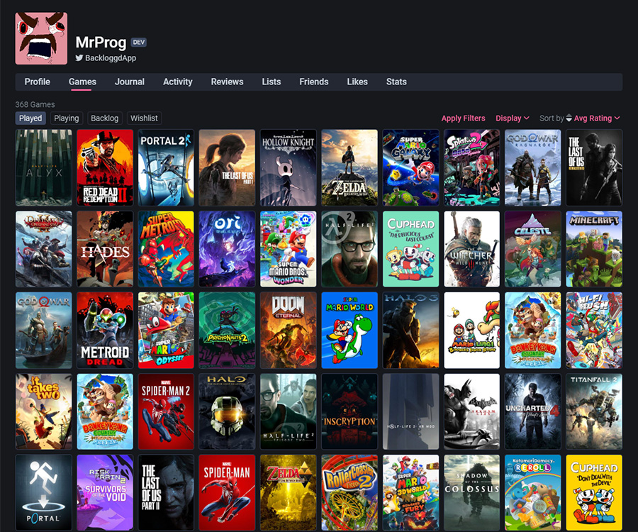

Registre sua coleção pessoal
Registre todos os jogos que você já jogou, está jogando e quer jogar. Seja tão detalhista quanto quiser com recursos como controle de tempo, registro diário, plataforma e muito mais.
... é um lugar para registrar virtualmente sua coleção de midias no geral. Mantenha suas listas atualizadas, avalie suas mídias favoritas e adicione os próximos à sua lista de desejos. Compartilhe suas listas com seus amigos, seguindo uns aos outros para se manterem atualizados sobre suas últimas novidades.
Registre todos os jogos que você já jogou, está jogando e quer jogar. Seja tão detalhista quanto quiser com recursos como controle de tempo, registro diário, plataforma e muito mais.
Siga seus amigos, veja o que eles estão assistindo, lendo ou jogando e compartilhe experiências. Com listas públicas e avaliações, você pode descobrir novas recomendações de quem você confia.

Crie listas temáticas ou por gênero, organize seus favoritos e compartilhe com a comunidade.
Leia avaliações de outros usuários, compartilhe sua opinião e descubra novos títulos com base no que você gosta.